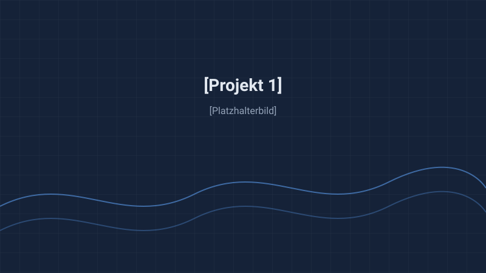
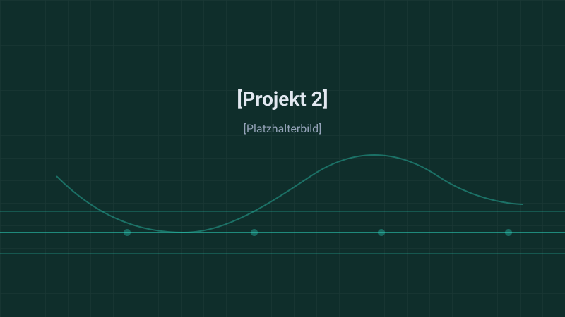
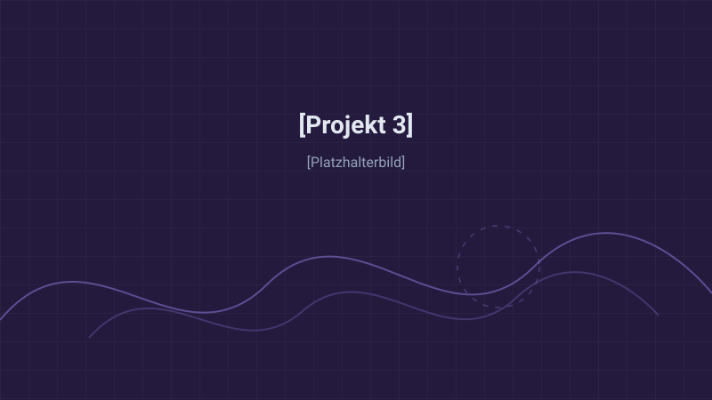

Simulation
Multiphase flow and transport phenomena, from laboratory scale to pilot scale.
- CFD
- FEM/FVM
- Packed bed simulation
- EQMOM
- OpenFOAM
- LAMMPS
Verfügbar ab Januar 2027
Computational Engineer | Simulation, Optimierung & HPC
Entwicklung physikbasierter Simulationspipelines, CFD-Modelle und automatisierter Optimierungsalgorithmen.
Masterstudent der Computational Engineering Science an der RWTH Aachen University mit Fokus auf numerischer Strömungsmechanik, physikalischer Modellierung und Hochleistungsrechnen.
Praktische Erfahrung am Forschungszentrum Jülich und am Lehrstuhl für Verfahrenstechnik (FVT) in der Entwicklung robuster Python- und C++-Pipelines zur Mehrzieloptimierung komplexer Systeme.
Multiphase flow and transport phenomena, from laboratory scale to pilot scale.
Numerische Codes und Automatisierung, die ein physikalisches Modell in lauffähige Software übersetzen.
Mehrzieloptimierung und die parallelen Löser, auf denen sie aufsetzt.
Reproduzierbare Pipelines, versioniert vom Commit bis zum Ergebnis.
3 von 3 Projekten

Optimierung
Die Pelletgeometrie bestimmt sowohl Druckverlust als auch Reaktivität – und beide Ziele ziehen gegeneinander.
Mehrziel-evolutionäre Optimierung (NSGA-II) gekoppelt an physikalische Schüttungsgeometrie-Simulationen, gesteuert über eine PyGMO-Suche auf den Geometrieparametern.
Forschungszentrum Jülich & RWTH Aachen University

Simulation
Das Betriebsfenster eines Multiphase-Loop-Reaktors im Pilotmaßstab war für biotechnologische Anwendungen unbekannt.
CFD-Modellierung der Mehrphasenströmung zur Bestimmung des stabilen Betriebsfensters. Peer-reviewt veröffentlicht.
Lehrstuhl für Verfahrenstechnik, RWTH Aachen University

Webentwicklung
Skitouren werden als GPS-Tracks aufgezeichnet, die über das Gelände in drei Dimensionen nichts aussagen.
Eine browserbasierte WebGL-Anwendung, die aufgezeichnete Touren und die Pistenhistorie in einer interaktiven 3D-Szene darstellt.
In dieser Kategorie gibt es noch keine Projekte.
Fluid dynamic characterization and operating window analysis of a pilot-scale multiphase loop reactor, establishing the stable operating envelope for biotechnological use. Peer-reviewed journal article.
Entwicklung einer automatisierten Optimierungskette für Schüttungsgeometrien zur Reduktion von Druckverlusten und Steigerung der Reaktivität. Masterarbeit im Rahmen eines gemeinsamen Forschungsprojekts.
Nicht veröffentlicht, da die Arbeit am Forschungszentrum Jülich entstanden ist.